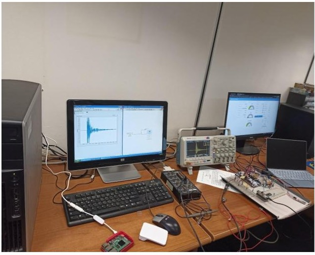
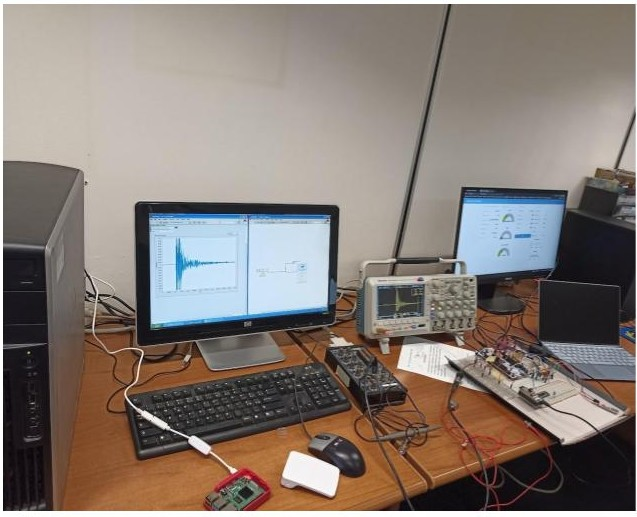

Embedded Applications
Muzziball - Smart Interactive Ball
A sophisticated embedded system project that combines hardware and software to create an interactive ball with multiple sensors and actuators. The system features advanced motion control, sensor integration, and real-time data processing capabilities.
Key features include:
- Advanced motion orchestration system for precise ball movement and control
- IMU (Inertial Measurement Unit) integration for accurate motion tracking
- Intelligent power mode management system to optimize battery life
- RGB LED matrix for dynamic color display and visual feedback
- Real-time data transmission to server for remote monitoring
- Comprehensive battery management system with status reporting
Wireless Crack Detection System
 

A sophisticated real-time crack detection system that combines Acoustic Emission (AE) technology with IoT capabilities. This master thesis project demonstrates the integration of embedded systems with cloud technologies for infrastructure monitoring.
Key Features:
- Real-time crack detection using Acoustic Emission sensors
- High-precision analog signal processing circuit
- Microsecond-resolution GPS timestamping
- MQTT protocol for reliable data transmission
- Raspberry Pi-based smart gateway
- Node-RED visualization interface
- Multi-node support for distributed sensing
- Cloud integration for data storage and analysis
The system demonstrates the practical application of IoT technologies in structural health monitoring, providing a robust solution for real-time crack detection and infrastructure monitoring. The implementation showcases the integration of various technologies including embedded systems, wireless communication, cloud computing, and data visualization.
Free Space Optical Communication System with AES Encryption
A comprehensive study and implementation of a secure free space optical communication system using LASER technology and AES encryption. This project combines theoretical analysis with practical implementation, demonstrating advanced concepts in optical communication and data security.
Theoretical Research:
- Analysis of laser wavelength impact on attenuation rates (optimal at 1550nm)
- Simulation using Optisystem for system modeling and verification
- Study of fog effects on 650nm laser transmission
- Mathematical modeling of:
- Distance vs. weather conditions vs. received optical power
- Distance vs. weather conditions vs. BER vs. transmitter power
- Pioneer implementation of Eye Diagram analysis at Aleppo University
Practical Implementation:
- Custom hardware design:
- Laser transmitter module
- Optical receiver with phototransistor
- OOK modulation circuit
- MATLAB-based user interface supporting multiple file types:
- Audio transmission
- Video streaming
- Text communication
- Image transfer
- AES encryption implementation for secure data transmission
- USB interface for data transfer between PC and optical system
- Successful testing at 50m distance (theoretical range up to 100m)
The system demonstrates practical applications of free space optics in secure communication, combining theoretical research with real-world implementation. The successful integration of AES encryption ensures data security while maintaining reliable optical transmission over significant distances.